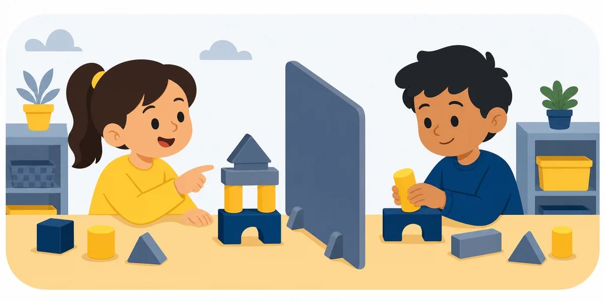

Activity 99 ·
Competing Voices

What to describe
Two students provide directions, but only one has accurate information.
Roles
How a round works
Make it harder or easier
Harder
Go one-way — no questions allowed — or cap the Describer at thirty words. Add a Messenger who cannot see either model.
Easier
Allow yes/no clarifying questions, agree on a shared starting piece, and let the Builder peek once before the barrier goes up.
Reflect
Standards & alignment
TEKS ELPS · speaking & listening; applies across any content activity (confirm grade code)
NGSS NGSS SEP-8: Obtaining, Evaluating & Communicating Information